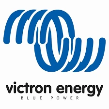

Store & protect
Lithium or AGM battery banks, battery management, isolation, protection and safe distribution.

Hamble · Southampton · Solent
Lithium, inverter/chargers, solar and monitoring, brought together in a system that suits your cruising. Installation, upgrades and support from Universal Marina on the River Hamble.
Start with the boat
More time at anchor. Reliable charging between trips. A clearer picture of what is using your battery. The right upgrade starts with how you use your vessel and the equipment already aboard.
We review your loads, battery capacity, charging sources and installation space before recommending a complete system or a focused improvement.
Bring us your charging problems, unexplained battery drain or plans for an upgrade. We can assess the existing installation, investigate faults and explain what can be retained or improved.
Before you upgrade
Not necessarily. A review helps establish which components can stay and whether a targeted upgrade will meet your needs.
Tell us your priorities and budget. We can discuss a phased approach and identify dependencies before choosing equipment.
That depends on the complete installation. We assess charging, protection, battery management and intended use before recommending a conversion.
Your boat make and model, location, existing equipment and what you want to improve. Photos of the installation and any available system drawings are useful for the follow-up conversation.
A complete power system
We can improve one weak point or design the entire energy system around your cruising pattern, available space and real electrical loads.
Lithium or AGM battery banks, battery management, isolation, protection and safe distribution.
Shore power, Orion DC-DC and alternator charging, plus solar working as a coordinated system.
MultiPlus and Quattro inverter/chargers sized for the equipment you actually use onboard.
Cerbo GX, GX Touch, SmartShunt and VRM remote monitoring for a clear view of system health.
Battery drain, poor charging and unreliable shore power investigated through our electrical diagnostics service.
Configuration, testing and a clear handover, with ongoing support from our River Hamble base.
Monitoring & control
We configure monitoring to help you understand battery levels, charging and consumption. Remote access depends on the equipment installed and a suitable internet connection aboard.
Power systems we trust
We select and configure power equipment around the vessel, expected loads and the way the owner uses the boat.
Your cruising, your priorities
Review battery condition, shore charging and everyday loads so you know where an improvement would make a difference.
Balance refrigeration, lighting and other loads against storage, solar and charging opportunities.
Assess larger appliances and everyday demand together, with realistic expectations for capacity and recharging.
From first conversation to handover
Discuss your plans and review existing equipment, electrical loads and available space.
Agree the scope, equipment and installation plan before work begins.
Integrate the equipment, configure the system and test its operation.
Walk through the controls and day-to-day operation, with a team you can contact afterwards.
Speak to Knight Marine about lithium, solar and onboard power upgrades in Hamble, Southampton and across the Solent.